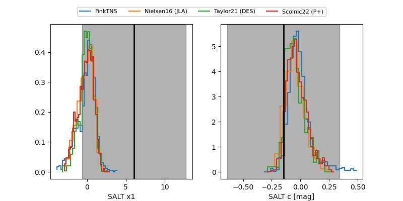

FINK: ZTF25abnkoof
Lasair: ZTF25abnkoof
ALeRCE: ZTF25abnkoof
ZTF25abnkoof (ztf,fink)
equatorial (ra, dec) = (289.2328,-18.53409)
galactic (l, b) = (18.9335,-13.80474)

last ztfr=19.58
5 ztfr detections